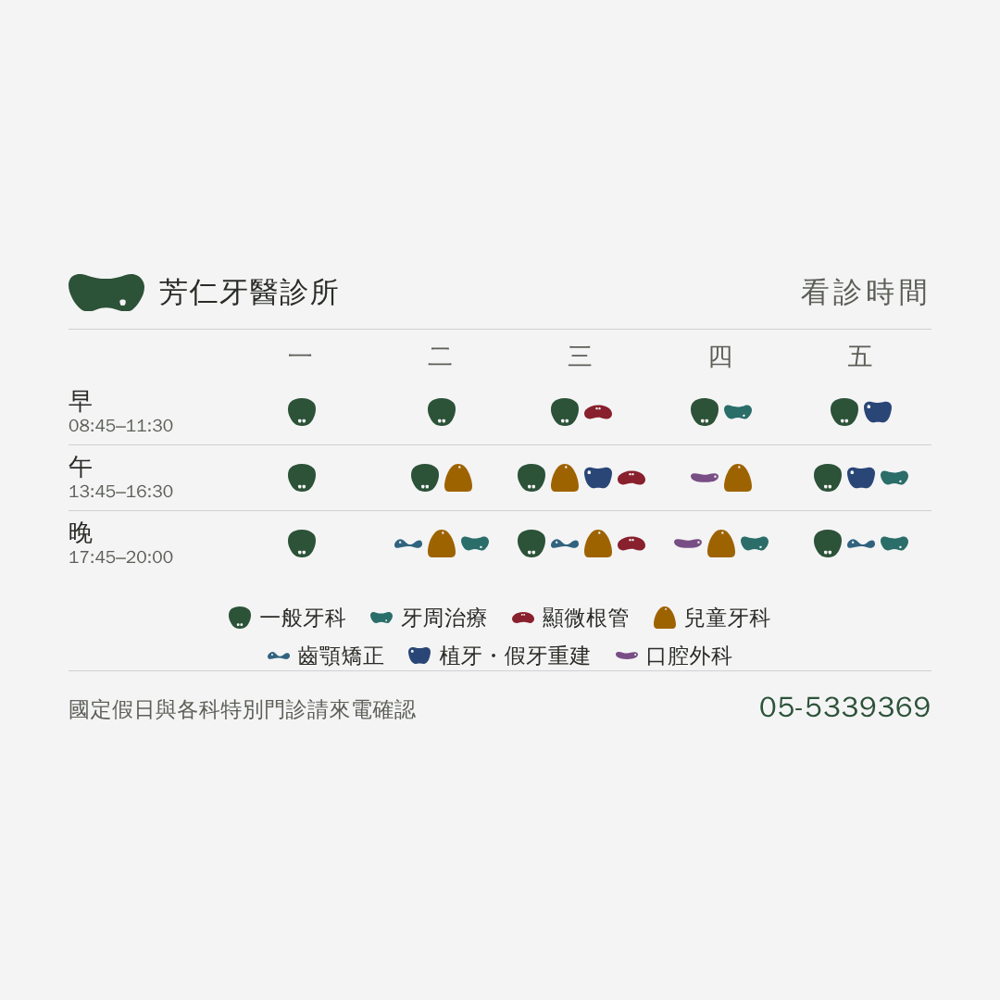

LINE 貼文的看診時間圖 圖案怎麼排 兩版對照 2026-09-07
四個排成一列讀起來像一條橫條。兩種拆法各有代價， 而代價是量出來的。
Ⓥ 同一節都直的

最好讀——每一欄一眼數得出有幾科。
⚠ 但「晚」那一節有四科，直排就是四倍高：整塊 623px，
超出主頁大格看得到的那 537 列共 86px。
要收得進去圖案得縮到 13px，而 22px 已經是形狀分不出來的門檻——
13px 等於只剩顏色在作用，形狀白給。
所以這一版是「直排 ＋ 圖案 26px ＋ 主頁大格會被切」的組合。

↑ 大格：品牌條與電話被切掉了，只剩表格中段。
Ⓦ 一行兩個，滿了斷行建議

四個變 2×2，看得出是四個各自獨立的東西，只長兩倍高。
整塊 514px，收得進 537——圖案維持 30px，主頁大格也完整。

↑ 大格：品牌條、整張表、電話都在。
Ⓗ 橫排一列 上一版，當對照

＝ 你說的「擠成一個橫條」那一版。整塊 490px，最矮。
「詳情」欄要貼的字
一週的門診時段，以及每一節有哪些科別。
早 08:45–11:30 午 13:45–16:30 晚 17:45–20:00
國定假日與各科特別門診請來電確認 05-5339369
排班、時段、電話都是從站上 index.html 讀回來的，
不重打——診所改排班，重跑一次就好。